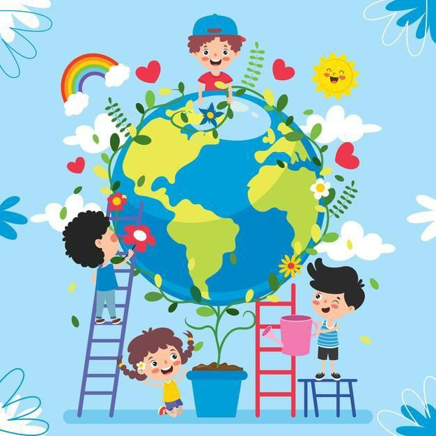

PROTECCION
*La protección del medio ambiente es el esfuerzo para cuidar y conservar nuestro planeta y todos sus recursos. Esto es fundamental para garantizar que las futuras generaciones puedan disfrutar de un entorno sano y equilibrado. Aquí están cinco puntos clave sobre la protección del medio ambiente:*
1. *Conservación de Recursos Naturales*: Implica el uso responsable de recursos como agua, energía y materias primas. Por ejemplo, podemos ahorrar agua cerrando el grifo mientras nos lavamos los dientes o usando bombillas de bajo consumo.
2. *Prevención de la Contaminación*: Se trata de evitar que sustancias dañinas contaminen el aire, el agua y el suelo. Esto incluye reducir el uso de plásticos desechables, promover el reciclaje y optar por productos ecológicos.
3. *Protección de la Biodiversidad*: Es esencial preservar todas las especies de plantas y animales en su hábitat natural. Esto significa apoyar iniciativas que protejan parques nacionales y reservas naturales, así como participar en actividades que promuevan la conservación.
4. *Educación Ambiental*: Aprender sobre los problemas ambientales y sus soluciones es crucial. Podemos informarnos a través de libros, documentales o actividades escolares, y luego compartir ese conocimiento con amigos y familiares para crear conciencia.
5. *Acciones Comunitarias*: La protección del medio ambiente también implica trabajar juntos como comunidad. Participar en limpiezas locales, plantar árboles o apoyar legislaciones que protejan el medio ambiente son ejemplos de cómo podemos hacer una diferencia colectiva.

| ANT | INICIO |